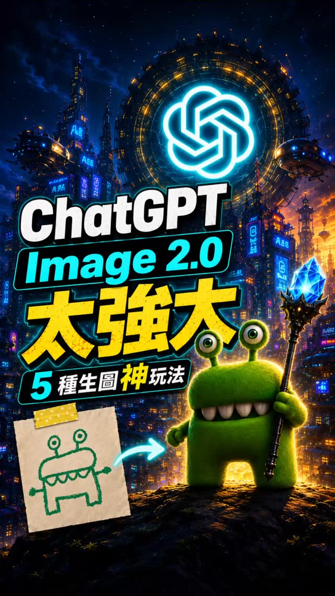

Beezi AI note Threads｜ChatGPT Image 2 把小孩塗鴉變電影角色的角色一致性案例
Beezi AI note 分享一則 ChatGPT Image 2 測試：把小孩塗鴉轉成電影角色，並觀察角色一致性。封面可見「ChatGPT Image 2.0 太強大」「5 種生圖神玩法」字樣，左下是簡筆綠色小怪物塗鴉，右下則是轉換後的綠色 3D 角色，背景是科幻城市。

這則案例值得保存的原因
- 它展示「草圖 → 角色設定 → 電影感成品」的低門檻工作流。
- 角色一致性是 AI 漫劇、短片、品牌 IP、教材角色最核心的痛點。
- 把小孩塗鴉轉成角色，也適合親子創作、課程暖身與故事開發。
官方查核
OpenAI 的 ChatGPT Images 相關資料提到，新版圖像生成與編輯能更精準遵守指令，並在編修過程中保留臉部相似度與重要細節；OpenAI Academy 也建議可透過逐步修訂維持圖像一致性。這與貼文「角色一致性比預期完整」的觀察方向一致。
可複用 prompt 架構
- 上傳草圖：說明哪些元素必須保留，例如眼睛、牙齒、身形、顏色。
- 指定角色風格：3D animation、cinematic、children friendly、soft lighting。
- 指定一致性：keep the same silhouette, eyes, mouth, body proportions across variations。
- 生成多場景：海報、近景、全身、表情表、動作表。
- 人工挑片：保留最一致的一版作為角色基準。
風險與注意
- 「ChatGPT Image 2」可能是社群/產品介面用語；官方文件實際模型名稱會更新，需以 OpenAI 文件為準。
- 若使用小孩塗鴉或個人作品，需取得創作者/家長同意。
- 若角色風格太接近既有電影 IP，要避免侵權或混淆。
來源
- Beezi AI note Threads：小孩塗鴉轉電影角色。
- OpenAI：The new ChatGPT Images is here。
- OpenAI Academy：Creating images with ChatGPT。
- OpenAI API：Image generation guide。